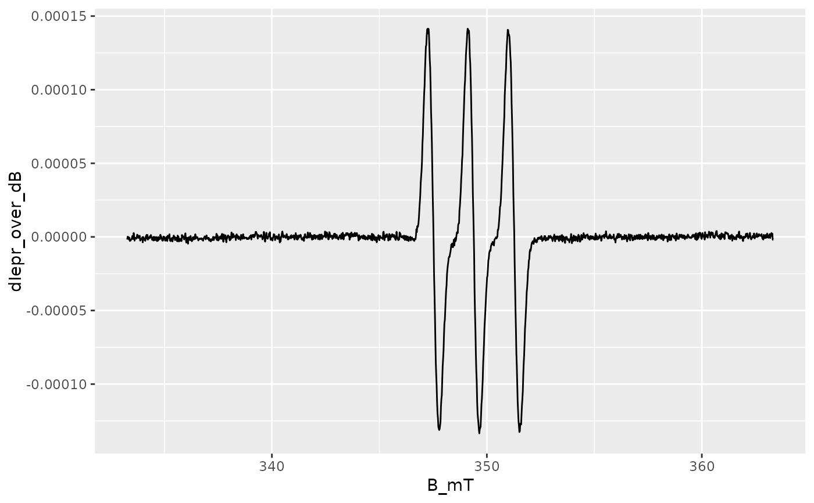
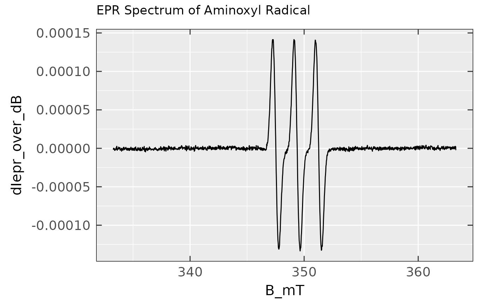
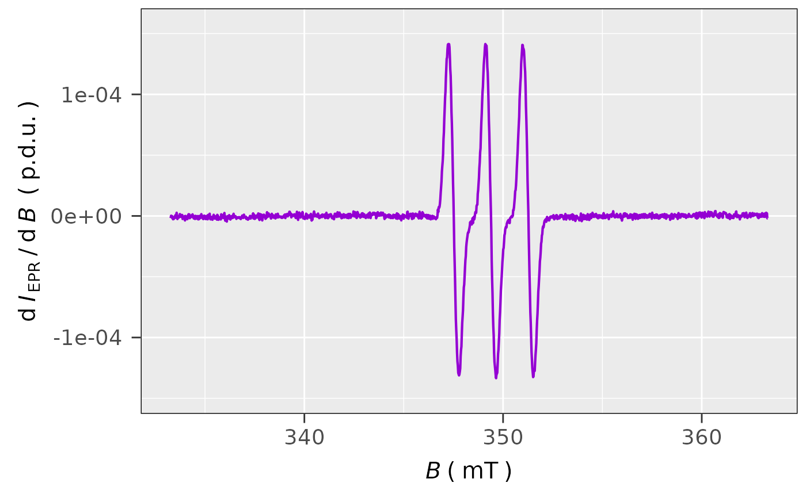
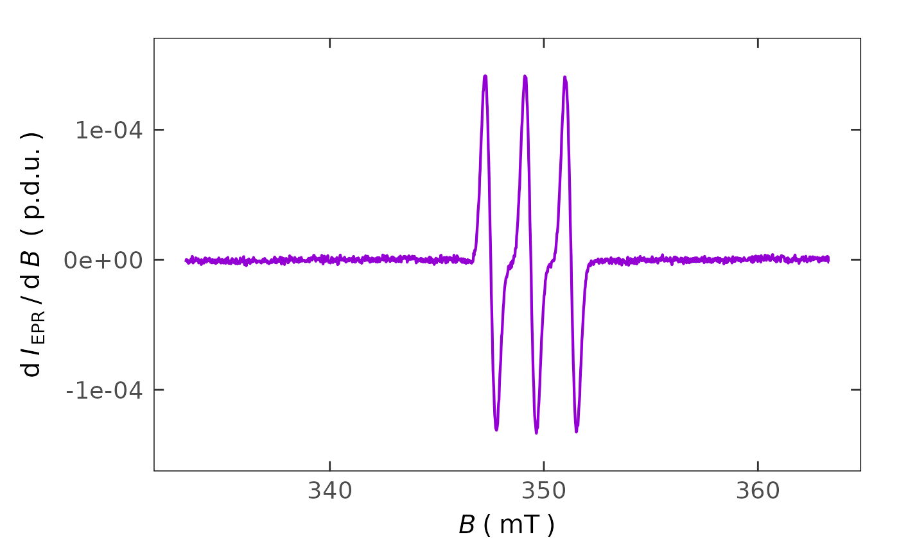

Custom ggplot2 Theme with Axis Ticks Oriented Inside the Panel
Source: R/plot_themes.R
plot_theme_In_ticks.RdChange the ggplot2-based theme in order to meet the needs
of graph (such as EPR spectrum, kinetic profiles...etc)
visuals/non-data components of the actual plot. Theme can be mainly applied
for the basic ggplot2 components like
ggplot() + geom_...() + ... and consists of highlighted panel borders, grid and axis ticks pointing
inside the graph/plot panel. For details of ggplot2 theme elements please,
refer to Modify Components of a Theme
(see also the theme) or to
ggplot2 Elements Demonstration by Henry Wang.
Usage
plot_theme_In_ticks(
axis.text.size = 14,
axis.title.size = 15,
grid = TRUE,
border.line.color = "black",
border.line.type = 1,
border.line.width = 0.5,
bg.transparent = FALSE,
...
)Arguments
- axis.text.size
Numeric, text size (in
pt) for the axes units/descriptions, default:axis.text.size = 14.- axis.title.size
Numeric, text size (in
pt) for the axes title, default:axis.title.size = 15.- grid
Logical, whether to display the
gridwithin the plot/graph panel, default:grid = TRUE.- border.line.color
Character string, setting up the color of the plot panel border line, default:
border.line.color = "black".- border.line.type
Character string or integer, corresponding to width of the graph/plot panel border line. Following types can be specified:
0 = "blank",1 = "solid"(default),2 = "dashed",3 = "dotted",4 = "dotdash",5 = "longdash"and6 = "twodash"..- border.line.width
Numeric, width (in
mm) of the plot panel border line, default:border.line.width = 0.5.- bg.transparent
Logical, whether the entire plot background (excluding the panel) should be transparent, default:
bg.transparent = FALSE, i.e. no transparent background.- ...
additional arguments specified by the
theme(such aspanel.backgroud,axis.line,...etc), which are not specified otherwise.
See also
Other Visualizations and Graphics:
draw_molecule_by_rcdk(),
plot_EPR_Specs(),
plot_EPR_Specs2D_interact(),
plot_EPR_Specs3D_interact(),
plot_EPR_Specs_integ(),
plot_EPR_present_interact(),
plot_labels_xyz(),
plot_layout2D_interact(),
plot_theme_NoY_ticks(),
plot_theme_Out_ticks(),
present_EPR_Sim_Spec()
Examples
## loading the aminoxyl radical CW EPR spectrum:
aminoxyl.data.path <-
load_data_example(file = "Aminoxyl_radical_a.txt")
aminoxyl.data <-
readEPR_Exp_Specs(aminoxyl.data.path,
qValue = 2100)
#
## simple `ggplot2` without any theme customization
ggplot2::ggplot(data = aminoxyl.data) +
ggplot2::geom_line(
ggplot2::aes(x = B_mT,y = dIepr_over_dB)
)

#
## simple `ggplot2` with `in-ticks` theme and tile
ggplot2::ggplot(data = aminoxyl.data) +
ggplot2::geom_line(
ggplot2::aes(x = B_mT,y = dIepr_over_dB)
) +
plot_theme_In_ticks() +
ggplot2::ggtitle(
label = "EPR Spectrum of Aminoxyl Radical"
)

#
## basic EPR spectrum plot by the `plot_EPR_Specs()`
plot_EPR_Specs(data.spectra = aminoxyl.data)

#
## previous spectrum combined with `in-ticks` theme
## without the panel background
plot_EPR_Specs(data.spectra = aminoxyl.data) +
plot_theme_In_ticks(
panel.background = ggplot2::element_blank()
)
